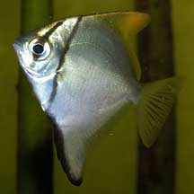
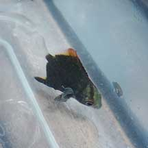

|
|
| fishes text index | photo index |
| Phylum Chordata > Subphylum Vertebrate > fishes |
| Silver
moony Monodactylus argenteus Family Monodactylidae updated Sep 2020 Where seen? Seldom seen on the intertidal, but this elegant fish was showcased at the Sungei Buloh Wetlands Reserve visitor centre's aquarium. Groups of them are sometimes seen by divers at Pulau Hantu. Fishermen are also sometimes seen catching them on our shores. In the wild, they may school in large numbers in open waters, under jetties and in bays. It is also known as Diamond fish and Silver batfish. What are moonies? Silver moonies belong to Family Monodactylidae. According to FishBase: the family has 2 genera and 5 species. Found in schools in estuaries and near freshwater streams, in harbours and near jetties. Some species are inhabit brackish waters and may even swim far up into freshwater systems. Features: 4-25cm. Body flattened sideways into a rhomboid shape. Adults silvery with a yellow and dusky dorsal fin and lack pelvic fins. Juveniles have pelvic fins, are more colourful with almost all yellow dorsal fin and a narrow black bar on the head through the eye and another bar over the gill cover. Some describe the juveniles as sometimes being dark, almost black, with a red tip on the dorsal fin. Being really flat, from the front, the fish looks like a stick! 'Mono' means 'one' and 'daktylos' means 'finger'. Sometimes confused with the Batfish. |
 Sungei Buloh Wetland Reserve, Oct 03 |
 Seen from the front, it resembles a stick! Sungei Buloh Wetland Reserve, Oct 03 |
| What does it eat? It feeds on
plankton and detritus and are said to be highly territorial. Human uses: The fish is sometimes caught by local anglers and is considered a common and popular freshwater aquarium fish. |
| Silver moonies on Singapore shores |
On wildsingapore
flickr
|
| Other sightings on Singapore shores |
 Siloso, May 09 Photo shared by Ivan Kwan on his blog. |
| Family
Monodactylidae recorded for Singapore from Wee Y.C. and Peter K. L. Ng. 1994. A First Look at Biodiversity in Singapore.
|
Links
References
|